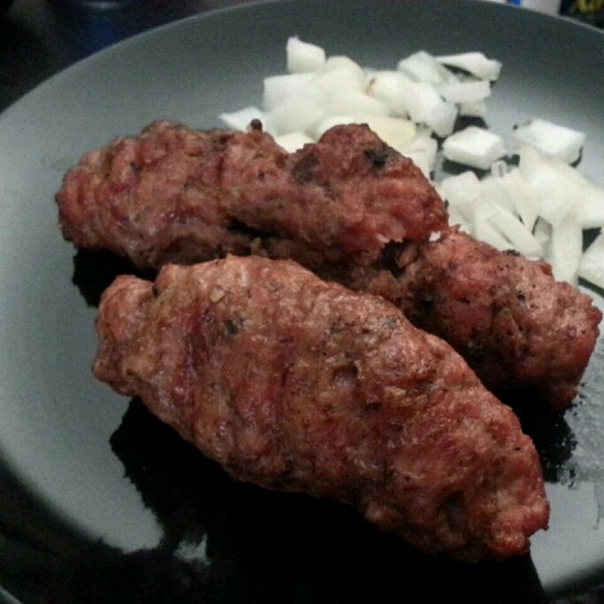

Serbian Cevapcici

Description
A delicious little sausage-like meat. Great served as a sandwich.
Ingredients
- 1 ½ pounds ground pork
- 1 pound lean ground beef
- ½ pound ground lamb
- 1 egg white
- 4 cloves garlic, minced
- 1 teaspoon salt
- 1 teaspoon baking soda
- 2 teaspoons ground black pepper
- 1 teaspoon cayenne pepper
- ½ teaspoon paprika
Steps
- Preheat a grill for medium-low heat.
- In a large bowl, combine the ground pork, ground beef, ground lamb and egg white. Add the garlic, salt, baking soda, black pepper, cayenne pepper and paprika. Mix well using your hands, and form into finger length sausages about 3/4 inch thick.
- Lightly oil the grilling surface. Grill sausages until cooked through, turning as needed, about 30 minutes.